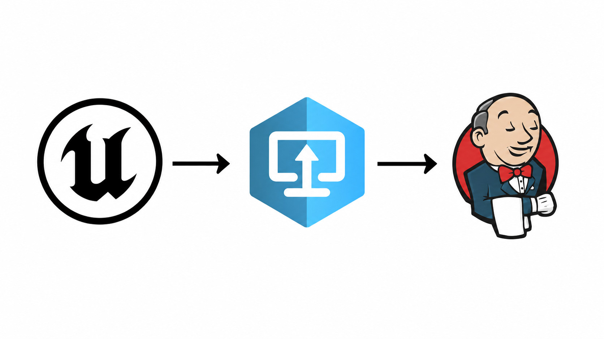
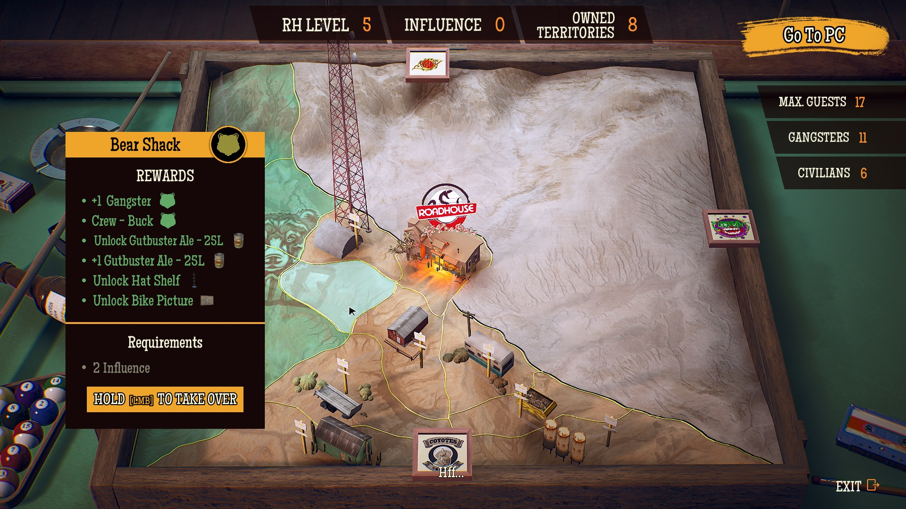
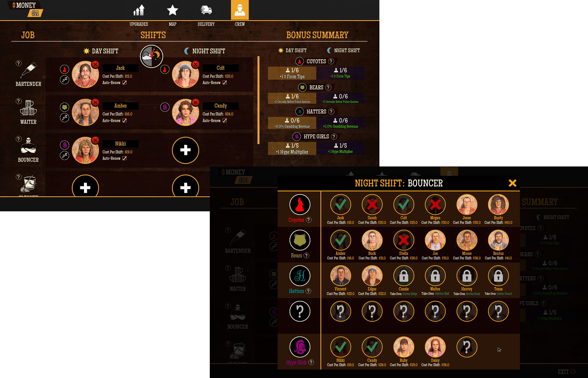

Drago Entertainment
Roadhouse Simulator
Welcome back to Route 66. This story starts a little earlier.
Pour beer. Break up brawls. Run pig races. Distill your own liquor. Make deals out back. And when the cops show up, act natural.
Roadhouse Simulator is a standalone prelude to Gas Station Simulator, following Uncle as he takes charge of a rundown roadside bar with more problems than customers — and turns it into the rowdiest stop on the highway.
My Contributions
Roadhouse Simulator was the first standalone project I led from initial setup through launch and post-release support. It gave me hands-on experience across the full development cycle of a AA game: establishing the technical foundations, delivering the prologue and demo, shipping multiple patches, and navigating a busy Steam launch. As a developer, I focused on the core gameplay systems that connected the game as a whole, particularly the AI and game progression.
Below are the key features and areas I was responsible for:
Project Management
- Managed the build pipeline using Perforce and Jenkins to keep builds reliable and support smooth transitions between products and configurations.
- Managed version control in Perforce across multiple departments, keeping branches consistent and coordinating changes to minimise conflicts.
- Coordinated programming work with QA to ensure the intended changes were included in builds submitted for testing and releases.

AI System
- Integrated an existing AI plugin from another project and adapted it to the needs of Roadhouse Simulator.
- Developed a character type system that lets designers and programmers configure distinct behaviours, stats, and life cycles.
- Implemented a new vehicle traffic system.
- Built supporting AI systems and libraries for queueing, movement and animation handling, stuck character recovery, fast target object searches and many more.

The Influence Map - Game Progression System
- Developed a system of unlockable territories with configurable requirements and rewards.
- Designed a modular system with accessible configuration tools, giving designers full control over the map's content.
- Coordinated work across art departments to ensure game logic, animations, sound, cinematics, and other visuals worked together seamlessly.
- Implemented the complete user interface from a design mockup.

Employee System
- Developed a system that lets players hire employees and assign them to specific roles in the Roadhouse.
- Decoupled the employee system from AI actors in the world to maintain stability and reliability.
- Implemented all employee behaviours.
- Exposed all settings through data tables and data assets, giving designers easy access to every relevant property.
- Implemented the complete user interface from a design mockup.
